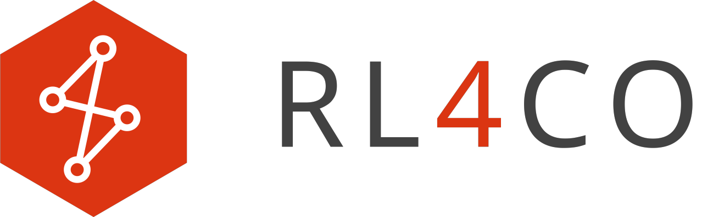

- TorchRL: official PyTorch framework for RL algorithms and vectorized environments on GPUs
- TensorDict: a library to easily handle heterogeneous data such as states, actions and rewards
- PyTorch Lightning: a lightweight PyTorch wrapper for high-performance AI research
- Hydra: a framework for elegantly configuring complex applications
Installation
You can easily install RL4CO from PyPI:
pip install rl4co
Unified and Modular Implementation of RL-for-CO
RL4CO aims to decouple the major components of the autoregressive policy of NCO and its training routine while prioritizing reusability. We consider five major components, which are explained in the following paragraphs.
This module takes the problem and constructs solutions autoregressively. The policy consists of the following components: Init Embedding, Encoder, Context Embedding, and Decoder. Each of these components is designed as an independent module for easy integration. Our policy design is flexible enough to reimplement state-of-the-art autoregressive policies, including AM, POMO, and Sym-NCO, for various CO problems such as TSP, CVRP, OP, PCTSP, PDP, and mTSP, to name a few.
This module fully specifies the given problem and updates the problem construction steps based on the input action.
When implementing the environment, we focus on parallel execution of rollouts (i.e., problem-solving) while
maintaining statelessness in updating every step of solution decoding. These features are essential for ensuring
the reproducibility of NCO and supporting "look-back" decoding schemes such as Monte-Carlo Tree Search.
Our environment implementation is based on TorchRL, an open-source RL
library for PyTorch, which aims at high modularity and good runtime performance,
especially on GPUs. This design choice makes the Environment implementation standalone, even outside of RL4CO,
and consistently empowered by a community-supporting library -- TorchRL.
This module defines the routine that takes the Policy, Environment, and problem instances and generates the gradients of the policy (and possibly the critic for actor-critic methods). We intentionally decouple the routines for gradient computations and parameter updates to support modern training practices, which will be explained in the next paragraph.
Training a single NCO model is typically computationally demanding, especially since most CO problems are NP-hard. Therefore, implementing a modernized training routine becomes crucial. To this end, we implement the Trainer using Lightning, which seamlessly supports features of modern training pipelines, including logging, checkpoint management, automatic mixed-precision training, various hardware acceleration supports (e.g., CPU, GPU, TPU, and Apple Silicon), multi-GPU support, and even multi-machine expansion. We have found that using mixed-precision training significantly decreases training time without sacrificing NCO solver quality and enables leveraging recent routines such as FlashAttention.
Optionally, but usefully, we adopt Hydra, an open-source Python framework that enables hierarchical config management. It promotes modularity, scalability, and reproducibility, making it easier to manage complex configurations and experiments with different settings and maintain consistency across different environments. An overview of RL4CO code implementation is visualized in the overview figure.
Contribute
Have a suggestion, request, or found a bug? Feel free to open an issue or submit a pull request. We welcome and look forward to all contributions to RL4CO! We are also on Slack if you have any questions or would like to discuss RL4CO with us. We are open to collaborations and would love to hear from you 🚀Cite us
If you find RL4CO valuable for your research or applied projects:
@article{berto2023rl4co,
title = {{RL4CO}: an Extensive Reinforcement Learning for Combinatorial Optimization Benchmark},
author={Federico Berto and Chuanbo Hua and Junyoung Park and Minsu Kim and Hyeonah Kim and Jiwoo Son and Haeyeon Kim and Joungho Kim and Jinkyoo Park},
journal={arXiv preprint arXiv:2306.17100},
year={2023},
url = {https://github.com/kaist-silab/rl4co}
}